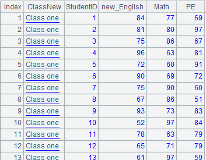
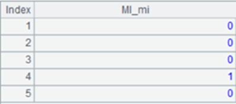

Description:
Call a database stored procedure.
Syntax:
db.proc( sql, param:type:mode:variable, ... )
Note:
The function calls a database stored procedure and sends its output variables to a cellset file. The output variables can be entered into the current context and their generated values can thus be referenced by the current cellset program.
Parameter:
|
db |
Database connection object |
|
sql |
The statement for executing a stored procedure, like call test(?,?) |
|
param |
The value of an input parameter. |
|
type |
The data type of the parameter |
|
mode |
"i" or "o". "i" indicates an input parameter and "o" indicates an output parameter. |
|
variable |
The output variable's name, through which the result of executing the stored procedure can be referenced in a cellset file. |
Values for type:
public final static byte DT_DEFAULT = (byte) 0; // By default, perform automatic recognition.
public final static byte DT_INT = (byte) 1;
public final static byte DT_LONG = (byte) 2;
public final static byte DT_SHORT = (byte) 3;
public final static byte DT_BIGINT = (byte) 4;
public final static byte DT_FLOAT = (byte) 5;
public final static byte DT_DOUBLE = (byte) 6;
public final static byte DT_DECIMAL = (byte) 7;
public final static byte DT_DATE = (byte) 8;
public final static byte DT_TIME = (byte) 9;
public final static byte DT_DATETIME = (byte) 10;
public final static byte DT_STRING = (byte) 11;
public final static byte DT_BOOLEAN = (byte) 12;
public final static byte DT_INT_ARR = (byte) 51;
public final static byte DT_LONG_ARR = (byte) 52;
public final static byte DT_SHORT_ARR = (byte) 53;
public final static byte DT_BIGINT_ARR = (byte) 54;
public final static byte DT_FLOAT_ARR = (byte) 55;
public final static byte DT_DOUBLE_ARR = (byte) 56;
public final static byte DT_DECIMAL_ARR = (byte) 57;
public final static byte DT_DATE_ARR = (byte) 58;
public final static byte DT_TIME_ARR = (byte) 59;
public final static byte DT_DATETIME_ARR = (byte) 60;
public final static byte DT_STRING_ARR = (byte) 61;
public final static byte DT_BYTE_ARR = (byte) 62;
public final static byte DT_CURSOR = (byte) 101;
public final static byte DT_AUTOINCREMENT = (byte) 102;
Example:
Ø Return a record through a stored procedure
|
|
A |
|
|
1 |
=orac.proc("{call RQ_TEST_CUR(?,?)}",:101:"o":table1,1:0:"i":) |
 |
|
2 |
=table1 |
A2 references the result of executing the stored procedure via the output variable table1 in A1.It gets the same result as A1. |
Here¡¯re the contents of the stored procedure:

Ø Return table sequences through a stored procedure
|
|
A |
|
|
1 |
=orac.proc("{call proAA(?,?)}",:101:"o":a,:101:"o":b) |
[[7369,7499,7521,¡],[1,2,3]]. Return a sequence of table sequences; each table sequence is referenced by an output variable |
|
2 |
=A1(1) |
Return the first table sequence in the sequence of A1 |
|
3 |
=a |
A3 and A4 get stored procedure results by referencing the output variables in A1 |
|
4 |
=b |
Here¡¯re the contents of the stored procedure:

Related functions: